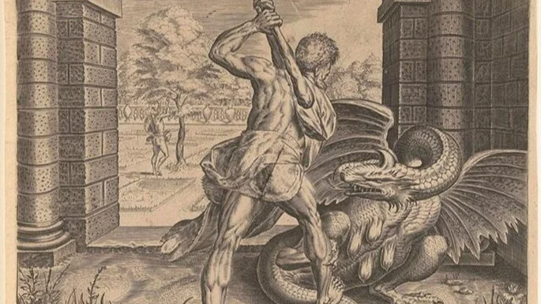
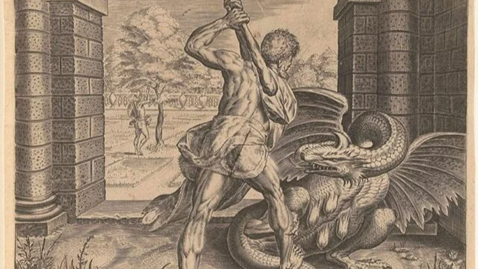

HERCULES
The myth of Hercules, is one of the most celebrated tales of heroism and divine intervention. Hercules was the son of Zeus, the king of the gods, and Alcmene, a mortal woman. His extraordinary strength and courage were evident even in infancy, as he strangled two serpents sent by the jealous goddess Hera in his crib. However, his path to glory was not without trials. Driven mad by Hera's jealousy, Hercules unwittingly killed his wife and children. Devastated by his actions, he sought redemption through a series of twelve labors assigned to him by King Eurystheus, tasks considered impossible for ordinary mortals. These labors took Hercules on a legendary journey, including the slaying of the Nemean Lion, the Hydra of Lerna, and the capture of the Golden Hind of Artemis. Perhaps his most famous feat was his struggle against the powerful Titan Atlas, whom he temporarily relieved of his burden by holding up the heavens. Throughout his trials, Hercules demonstrated not only his immense physical strength but also his cunning and resilience. He also formed enduring friendships, such as with the centaur Chiron and the warrior Theseus. Ultimately, Hercules achieved apotheosis, becoming a god upon his death and joining the ranks of the Olympian pantheon. His story serves as a testament to the triumph of the human spirit over adversity and the capacity for redemption, reminding us that even the mightiest heroes are not immune to the complexities of fate and the whims of the gods.
 
